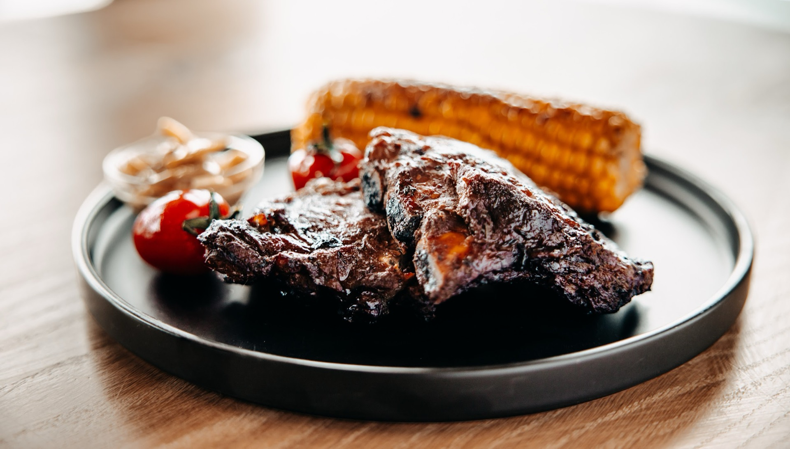
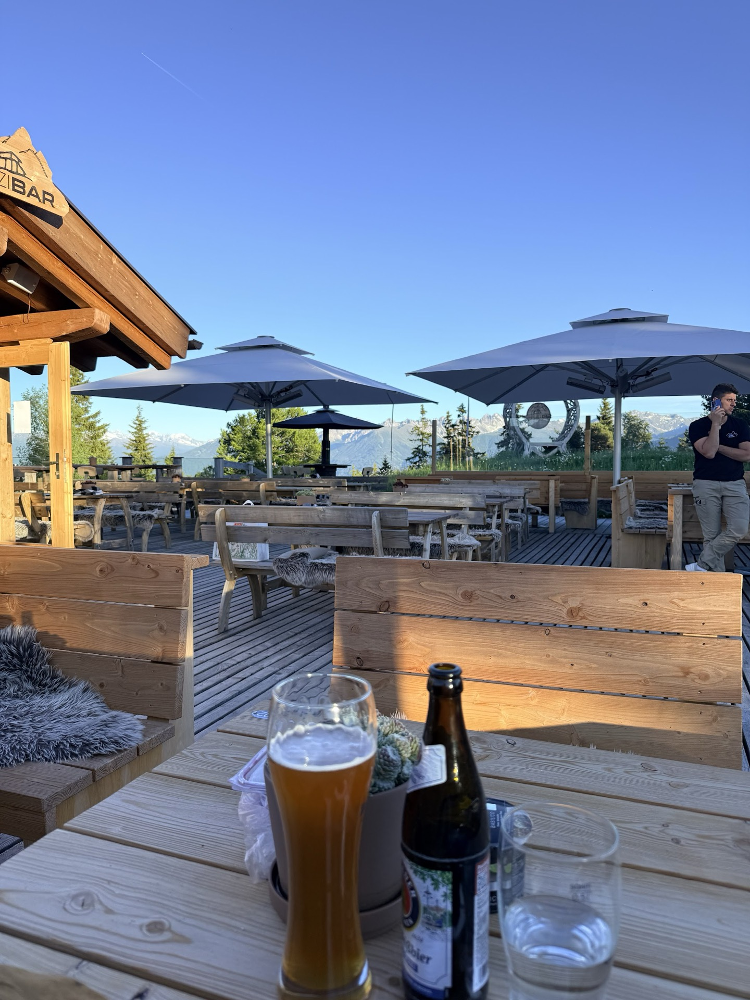
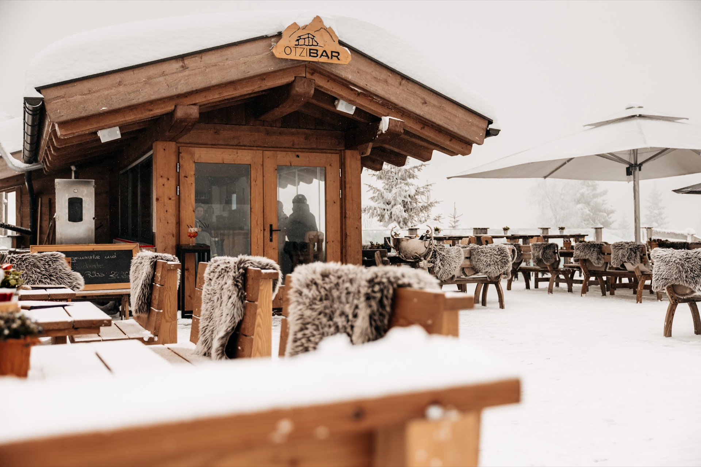
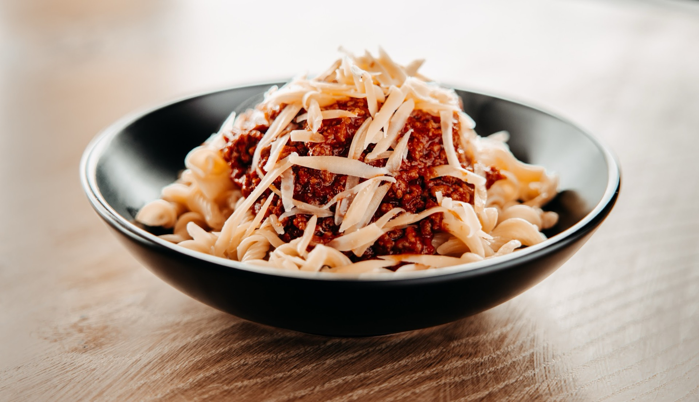
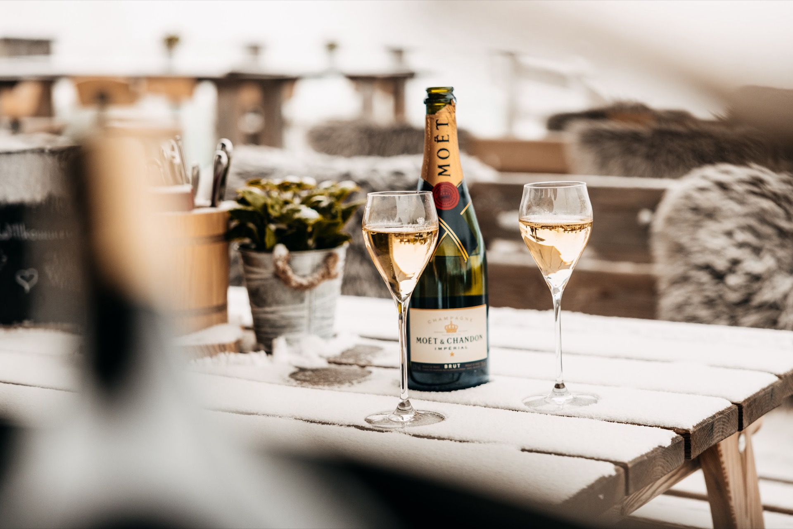
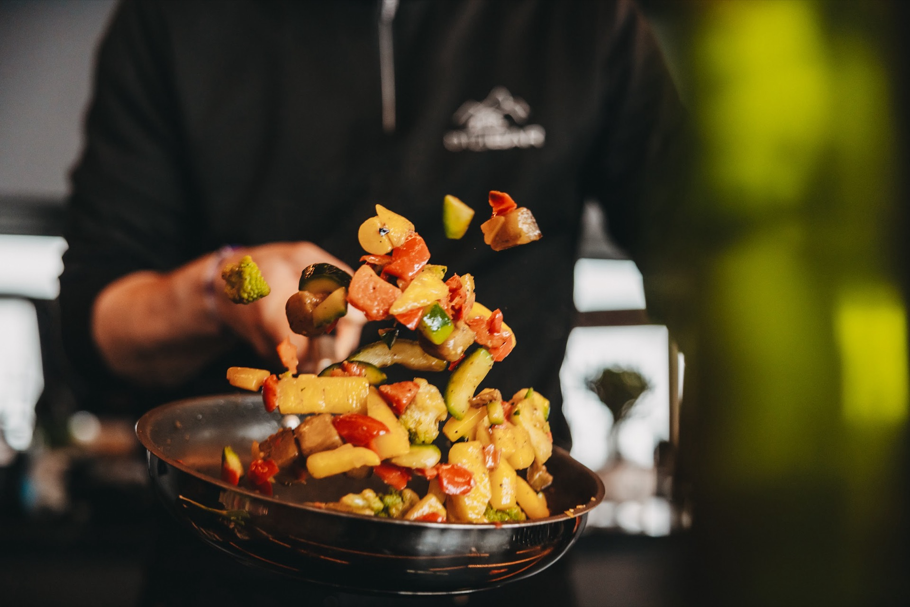
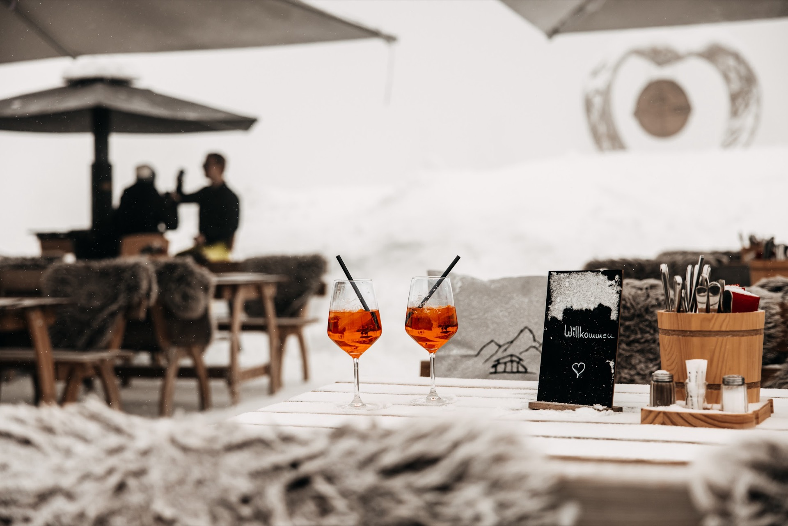
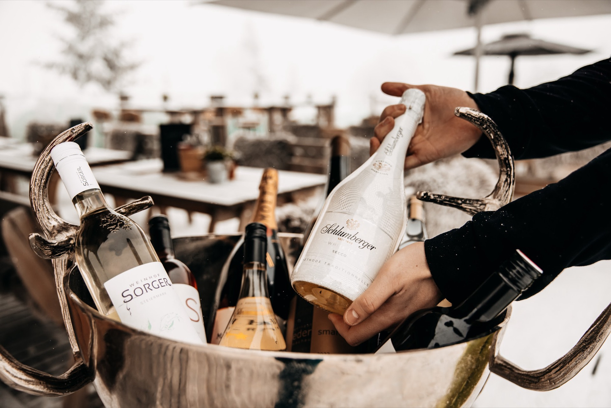

Alpine Smokerei
In der hauseigenen Smokerei werden Bio-Lachsforelle, saftige Rippchen und exklusive Wildbratwürste schonend geräuchert — langsam, ehrlich, unverwechselbar im Geschmack.

Skigebiet Gschwandtkopf · Seefeld in Tirol
Alpine Smokerei & Pasta-Genuss auf 1.500 m — im Winter wie im Sommer
Die Hütte
Die charmante Ötzibar G12 empfängt ihre Gäste direkt im Skigebiet Gschwandtkopf und verbindet authentische Tiroler Werte mit einem einzigartigen kulinarischen Konzept. Wo Gastfreundschaft großgeschrieben wird, spürt man vom ersten Moment an den echten Tiroler Flair — gepflegt mit viel Herzblut vom Team rund um Benjamin.
Ob entspannt im Liegestuhl bei guter Musik, eingekuschelt ins Schaffell auf der Winterterrasse oder gemütlich im Servicebereich — hier wird jeder Aufenthalt zur genussvollen Auszeit. Nur wenige Schritte vom Chalet G12 entfernt.


Kulinarik

In der hauseigenen Smokerei werden Bio-Lachsforelle, saftige Rippchen und exklusive Wildbratwürste schonend geräuchert — langsam, ehrlich, unverwechselbar im Geschmack.

Von Fusilli bis Tagliatelle: Jede Nudel wird im Haus produziert. Zum Genießen vor Ort — oder zum Mitnehmen für daheim.

Täglich frische Kuchen und Strudel, dazu eine heiße Schokolade mit Schlag — die süße Belohnung nach der Abfahrt oder Wanderung.
Speisekarte
Neu bei uns
Seit Neuestem wohnen flauschige Zwergschafe direkt neben der Ötzibar. Die zwei wolligen Kollegen mit ihren schwarzen Gesichtern sind längst die heimlichen Stars am Gschwandtkopf — und freuen sich über jeden Besuch.
Gerade für Kinder ein Highlight: Während Mama und Papa auf der Terrasse den Kaiserschmarrn genießen, wird am Zaun gestaunt, gelacht und fotografiert. Kommt vorbei und sagt Hallo!
Besucht uns
Impressionen








Anreise & Kontakt
+43 660 445 35 03
contact@chaletg12.com
| Mittwoch – Sonntag | 10:00 – 17:30 |
| Montag & Dienstag | Ruhetag |
Sommersaison bis 15.10. — im Winter täglich zur Skisaison geöffnet. Aktuelle Zeiten gerne telefonisch erfragen.
Parken an der Talstation der Gschwandtkopf-Lifte. Von dort zu Fuß, mit dem Bike oder bequem mit dem Sessellift zur Hütte. Bahnanreise bis Bahnhof Seefeld.